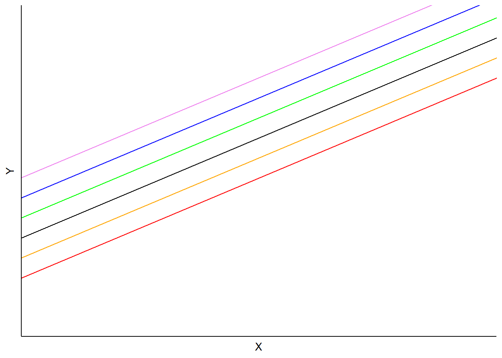
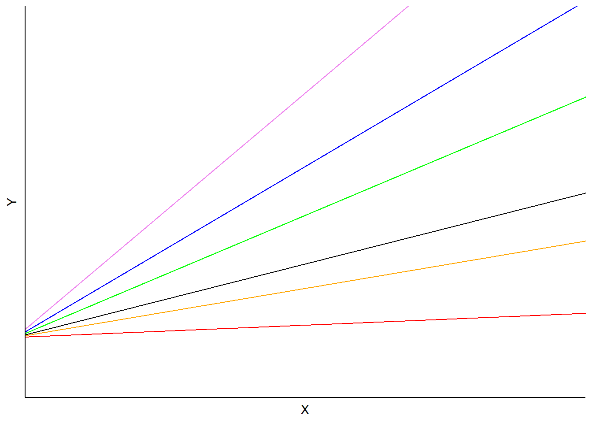
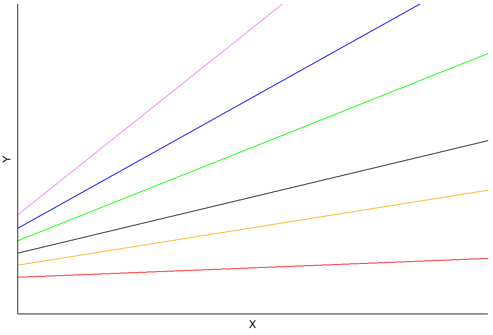

my_formula <- formula(Y ~ treatment1 + treatment2)
class(my_formula)[1] "formula"Mixed-effects models are called “mixed” because they simultaneously model fixed and random effects. These are also called “multilevel or”hierarchical” models in reference to groups or clusters with a hierarchical structure where we expect the groups to have correlations between their groups members.
This tutorial concerns (general) linear mixed models (sometimes abbreviated as “LMM”) where the dependent variable, when conditioned on the independent variable(s), follows a normal distribution. These are a special case of generalized linear mixed models (sometimes abbreviated “GLMM”), which allow the dependent variable to follow non-normal distributions. We will only be discussing the former in this tutorial.
Fixed effects represent population-level average effects that should persist across experiments. We often view our treatments or experimental interventions as fixed effects. Fixed effects are parameters drawn the entire population and/or associated with particular levels of a treatment (e.g. levels of nitrogen fertilizer). Fixed effects are similar to the parameters found in traditional regression techniques like ordinary least squares.
Random effects are discrete units sampled from some population (e.g. plots, participants), and thus they are categorical. Random effects are associated with experimental units drawn at random from a population with a probability distribution. Random effects are especially useful when we have (1) many levels (e.g., many species or blocks), (2) relatively little data on each level (although we need multiple samples from most of the levels), and/or (3) uneven sampling across levels. The general thinking is that random effects represent a sample of a population you want to make inference on.
Please read this section and refer back to if when you forget what these terms mean.
| Term | Definition |
|---|---|
| Random effect | An independent variable where the levels being estimated compose a random sample from a population whose variance will be estimated |
| Fixed effect | An independent variable with specific, predefined levels to estimate |
| Experimental unit | The smallest unit being used for analysis. This could be an animal, a field plot, a person, a meat or muscle sample. The unit may be assessed multiple times or through multiple point in time. When the analysis is all said and done, the predictions occur at this level. |
Recall simple linear regression with intercept (\(\beta_0\)) and slope (\(\beta_1\)):
\[ Y_{i} = \beta_0 + \beta_1 x_i + \epsilon_i \]
\(Y_i\) is the dependent variable, and \(x_i\) is the independent variable. The value for \(\beta_0\) is the overall average for \(Y_i\) and \(\beta_1\) is the change in \(Y\) as \(X\) changes. The slope for \(\beta_1\) could represent the effects of increasing quantities of nitrogen fertilizer on crop growth.
The errors,1 \(\epsilon_i\), or residual are independently and identically distributed (sometimes called “iid”) following a normal distribution for general linear mixed models.
1 For the rest of this tutorial we will be using the term “residual” and not “error term” to reflect current practices. The residual is calculated as \(Y - XB\), the gap between the observed value for \(Y_i\) and the predicted value, \(\hat{Y_i}\)
\[e_i \sim N(0, \sigma I_n)\] These are important model assumptions that we will revisit frequently in this tutorial (and later on we will explore relaxing these assumptions).
There is also an expected conditional distribution for \(Y_i\), but we will not be discussing this again.
\[ Y_i|x_i \sim𝑁(\mathbf{X \beta}, \sigma^2/r_i) \]
In least squares estimation, the slope and intercept are chosen in a way so that the residual sum of squares is minimized. If we consider this model in a mixed model framework, \(\beta_0\) and \(\beta_1\) would be fixed effects (also known as the population-averaged values).
Extending this example to a mixed model, we can consider adding another term, \(r_{j}\) that reflects levels sampled from a population that represent a random subset of a larger population:
\[ Y_{ij} = \beta_0 + \beta_1 x_i + r_j + \epsilon_{ij} \] In an agronomic field trial, \(r_{j}\) could be a random effect for block (i.e. the spatial positioning of a group of treatments). The random effect can be thought of as each block’s deviation from the fixed intercept parameter (that is, \(\beta_0\)). Like the residuals term, \(r_i\) is independently and identically distributed (sometimes referred to as “iid”):
\[r_i \sim N(0, \sigma_b)\] While random effects do not have to be normally distributed, that is the most common and most easily estimated. These are considered “random intercepts” where they all share a common \(B_0\) and \(B_1\).

Other alternatives to the random intercept model include modelling random slopes where the slope between X and Y changes according to the random effect:
\[ Y_{ij} = \beta_0 + (\beta_1 + r_j)X_{ij} + \epsilon_{ij}\]
In this model, the \(\beta\) is the overage effect of X on Y, and \(r_i\) is a random effect for block \(j\), and all observations share a common intercept, \(\beta_0\).

The other alternative is including both a random slope and a random intercept:
\[ Y_{ij} = (\beta_0 + r1_j) + (\beta_1 + r2_j)X_{ij} + \epsilon_{ij}\]
In this model, \(a_i\) and \(b_i\) are random effects for subject \(i\) applied to the intercept and slope, respectively. Predictions would vary depending on each subject’s slope and intercept terms:

Anecdotally, these models appear to be uncommon in agronomic trials.
Formula notation is often used in the R syntax for linear models. It follows this convention: \(Y ~ X\), where \(Y\) is the dependent variable (the response) and \(X\) is/are the independent variable(s) that is, the experimental treatments or interventions.
The package ‘lme4’ has some additional conventions regarding the formula. Random effects are put in parentheses and a 1| is used to denote random intercepts (rather than random slopes). The table below provides several examples of random effects in mixed models. The names of grouping factors are denoted g, g1, and g2, and covariates as x.
| Formula | Alternative | Meaning |
|---|---|---|
(1|g) |
1 + (1|g) |
Random intercept with a fixed mean |
(1|g1/g2) |
(1| 1) + (1|g1:g2) |
Intercept varying among g1 and g2 within g1 |
(1|g1) + (1|g2) |
1 + (1|g1) + (1|g2) |
Intercept varying among g1 and g2 |
x + (x|g) |
1 + x + (1 + x|g) |
Correlated random intercept and slope |
x + (x||g) |
1 + x + (1|g) + (0 + x|g) |
Uncorrelated random intercept and slope |
The first example, (1|g) suffices for most mixed models and is the only structure used in this guide.
The biggest advantage of mixed models is their incredible flexibility. They handle clustered individuals as well as repeated measures. They handle crossed as well as nested random factors. The biggest disadvantage of mixed models, at least for someone new to them, is their incredible flexibility. It’s easy to mis-specify a mixed model, and this is a place where a little knowledge can be dangerous.